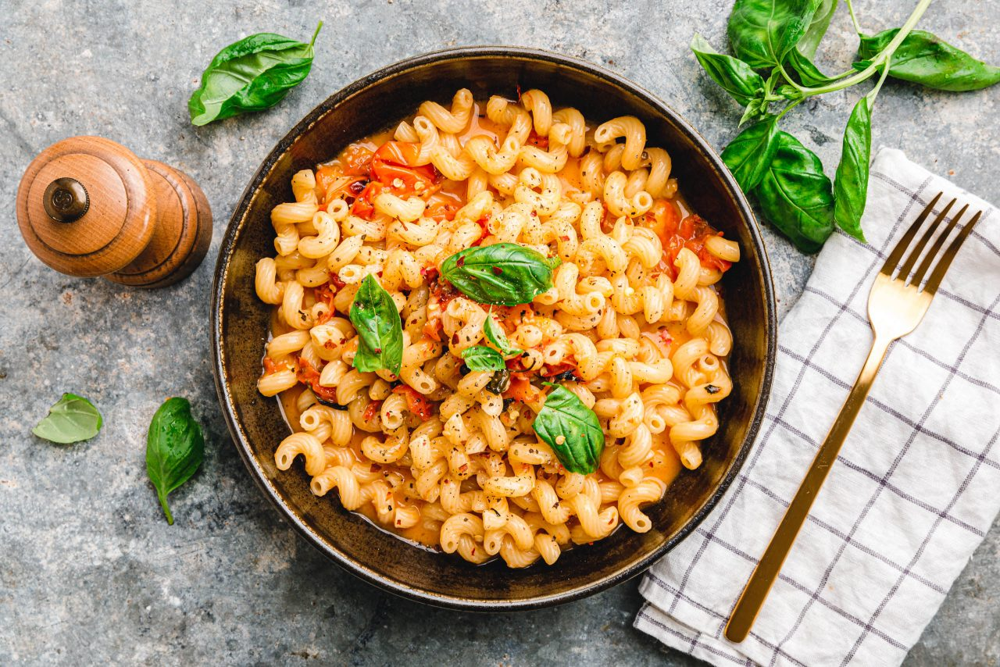

Vegan Baked Feta Pasta

A batch of top-creamy pasta with aromatic, roasted cherry tomatoes, good olive oil, garlic, and vegan feta - the whole thing still out of the oven and ready in under 30 minutes?
Voilà, here comes our version of the viral TikTok recipe "Baked Feta Pasta" in vegan.
For the vegan feta you can either use our feta alternative with tofu, as we have done for example with our spanakopita and all the years before.
For this feta pasta casserole, however, we'd rather recommend silken tofu or at least a mixture of silken and softer natural tofu,
so that when you bake it, it has the desired creamy, melt-in-your-mouth consistency that makes this pasta so popular. Or, even easier,
grab a ready-made vegan feta alternative from the supermarket. We had one in the fridge anyway. Nice!
Now everything is as simple as it is easy. The cherry tomatoes go into a baking dish with the feta placed in the center and are seasoned with garlic, good olive oil, oregano and salt.
By the way, we always like to let the tomato styles stew with them, because they add an extra charge of aroma and flavor. We add a few fiery chili flakes on top at this point, matter of honor.
Off we go into the oven!
Ingredients
- 250 g cherry tomatoes
- 4 cloves garlic
- 200 g vegan feta
- 1 tsp oregano rubbed
- ½ tsp chili flakes
- ½ tsp salt
- 1-2 tbsp olive oil
- 250 g cellentani or other pasta of your choice
- 3 sprigs basil
Steps
- Preheat oven to 220 °C top/bottom heat.
- Put tomatoes, peeled garlic cloves, feta, spices, salt, a few basil leaves and olive oil in a baking dish and bake for 25 minutes.
- Meanwhile, cook pasta in plenty of salted water and drain.
- Remove tomato-feta mixture from oven, remove tomato stalks, mash everything with a fork and mix into a creamy sauce. Mix in hot pasta and serve topped with fresh basil leaves.